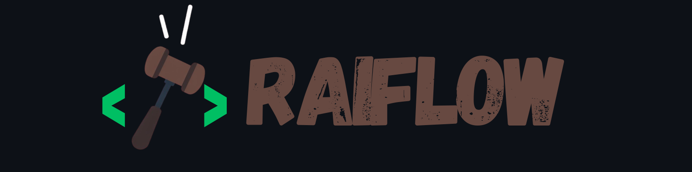
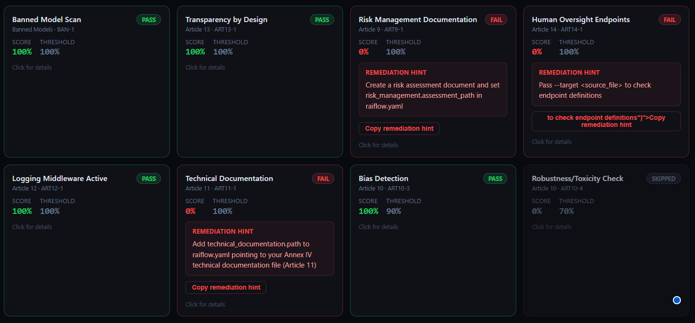
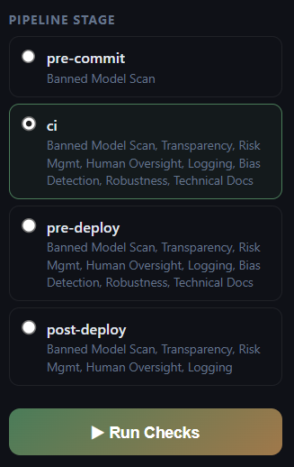
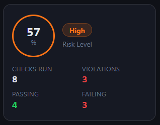
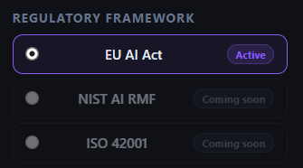

One command to scaffold, check, and enforce regulatory compliance across your entire AI/ML CI/CD pipeline. Articles 9–14, fully automated.
From your first commit to production deployment, RaiFlow keeps you on the right side of the EU AI Act.
Scans your project for AI framework imports (LangChain, Ollama, OpenAI, Transformers...), infers
your risk level, and writes a pre-filled raiflow.yaml and
GitHub Actions workflow in seconds.
Eight checks (MVP) against your manifest covering Articles 9–14, risk assessment existence, disclosure flags, oversight endpoints, logging middleware, bias detection, and toxicity testing.
Pass --enable-llm-checks to go beyond file existence, score your
actual documentation quality against Annex IV criteria using a local or cloud LLM.
A real-time browser dashboard streams check results as they complete via SSE. Download JSON reports, explore per-article regulatory citations, and see your compliance score at a glance.
Four pipeline stages (pre-commit → ci → pre-deploy → post-deploy) with auto-generated GitHub Actions workflows. Blocks merges and deployments on failure. Zero dashboard in CI.
An iterative LLM-as-a-Judge pipeline that interprets legal text and extracts machine-readable compliance rules directly from regulatory documents.
Run pip install raiflow then raiflow init in your project root. RaiFlow scans your Python
files, infers your EU AI Act risk level, and writes raiflow.yaml plus a GitHub Actions workflow.
The generated raiflow.yaml is pre-filled and commented. Add
your risk assessment path, override endpoints, dataset path, and any other evidence your
checks require.
raiflow check --stage ci opens a live dashboard and streams
results. Each check returns a score, threshold, status, and a precise remediation hint when
it fails.
The auto-generated workflow runs on every pull request. Compliance failures block merges and deployments. A signed JSON report is attached as a build artifact for audit trail purposes.
# 1. Install pip install raiflow # 2. Scaffold manifest + GitHub Actions workflow raiflow init # 3. Run compliance checks with live dashboard raiflow check --stage ci # 4. Headless mode for CI (auto-detected, but explicit is fine) raiflow check --stage ci --no-dashboard # 5. Semantic evaluation with an LLM (Ollama or API key) raiflow check --stage ci --enable-llm-checks All checks passed (8 checks, stage=ci)
| Check | Article | What it verifies |
|---|---|---|
| Banned Model Scan | Internal | Model identifier not on your blocklist |
| Transparency by Design | Article 13 | Disclosure flag set; semantic: disclosure language clarity and prominence |
| Risk Management Documentation | Article 9 | Risk assessment document exists; semantic: completeness, lifecycle coverage, vulnerable groups |
| Human Oversight Endpoints | Article 14 | Override/halt endpoints found in source; semantic: intervention clarity |
| Logging Middleware Active | Article 12 | Logging middleware flag set in manifest |
| Technical Documentation | Article 11 | Tech doc file exists; semantic: all five Annex IV elements covered |
| Bias Detection | Article 10 | Dataset scanned for bias on declared protected attributes |
| Robustness / Toxicity | Article 10 | Red-team prompts tested against configurable toxicity threshold |
A real-time compliance workbench that streams results as checks complete, right in your browser.

The Compliance Workbench
Multi-Stage Control
Risk Scoring
Policy PacksGet started in under a minute. No account required.